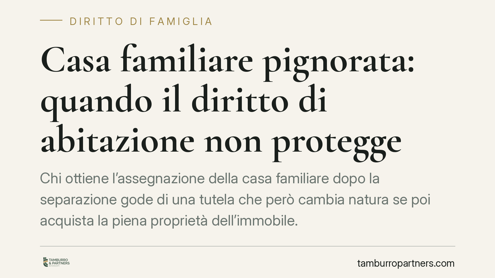

Casa familiare pignorata: quando il diritto di abitazione non protegge
Chi ottiene l'assegnazione della casa familiare dopo la separazione gode di una tutela che però cambia natura se poi acquista la piena proprietà dell'immobile. Secondo un orientamento della Corte di Cassazione, in quel momento il diritto di abitazione si consolida nella proprietà e diventa aggredibile per l'intero dai creditori. Un passaggio che conviene conoscere prima di agire.

Il caso: dall'assegnazione alla proprietà esclusiva
Una donna, assegnataria della casa familiare in sede di separazione, era poi divenuta proprietaria esclusiva dell'immobile. A fronte di un debito verso una banca creditrice, si era vista pignorare la casa per l'intero valore. La sua difesa: il provvedimento di assegnazione le garantiva una protezione che, a suo dire, limitava l'aggressione dei creditori.
La tesi non ha retto. Il ragionamento ruota attorno a un principio tecnico semplice da enunciare, meno intuitivo nelle sue conseguenze pratiche.
Inquadramento normativo
L'assegnazione della casa familiare è regolata dall'art. 337-sexies c.c. Si tratta di un provvedimento che tutela in via prioritaria l'interesse dei figli a conservare l'ambiente domestico. La stessa norma disciplina anche l'opponibilità ai terzi: il provvedimento, se trascritto, è opponibile secondo un regime temporale (in sintesi, nei limiti del novennio per i provvedimenti non trascritti; oltre, se trascritti), con rilevanza della data certa.
Attenzione però alla natura del diritto. L'assegnazione attribuisce all'assegnatario un diritto personale di godimento, un diritto "minore" rispetto alla proprietà. Quando chi è titolare di questo diritto minore acquista la piena proprietà dell'immobile, opera la cosiddetta consolidazione: il diritto minore si fonde nel diritto maggiore e cessa di avere autonoma rilevanza. In altre parole, non esiste più un "diritto di abitazione" separato da opporre: resta solo la proprietà piena, pignorabile per l'intero.
Implicazioni pratiche: il paradosso dell'acquisto
Qui sta il punto che conviene mettere a fuoco. Diventare proprietari esclusivi della casa familiare pignorata — o pignorabile — può apparire un rafforzamento della propria posizione. Sul piano dei rapporti con i creditori accade spesso il contrario.
Finché il soggetto è titolare del solo diritto di godimento derivante dall'assegnazione, i creditori personali trovano un ostacolo nell'opponibilità del provvedimento, nei limiti già visti. Nel momento in cui acquista la piena proprietà, quell'ostacolo scompare: l'immobile entra integralmente nel suo patrimonio e risponde dei suoi debiti per l'intero valore.
È la distinzione tra due piani che tendono a confondersi:
- la tutela endofamiliare, cioè la protezione dell'interesse dei figli e dell'assetto domestico interno alla famiglia;
- l'opponibilità ai terzi creditori, cioè la possibilità di resistere a un pignoramento.
La prima non viene meno: l'assegnazione continua a produrre effetti nei rapporti tra ex coniugi e verso i figli. Ma non costituisce uno scudo patrimoniale contro i creditori quando il bene è ormai in piena proprietà di chi quei debiti li ha contratti.
Il pignoramento della casa familiare, in questo scenario, non è bloccato dal richiamo all'assegnazione. Chi affronta un pignoramento della casa familiare dopo aver acquisito la quota mancante si trova, sul fronte esecutivo, in una posizione più esposta rispetto a prima.
Cosa fare in concreto
- Verifica la natura del tuo titolo sull'immobile: sei assegnatario di un diritto di godimento o proprietario (in tutto o in parte)? La risposta cambia il perimetro di aggredibilità.
- Prima di acquistare la quota dell'altro coniuge, valuta l'impatto sulla tua esposizione debitoria: la piena proprietà amplia ciò che i creditori possono pignorare.
- Controlla la trascrizione del provvedimento di assegnazione e la data certa: l'opponibilità ai terzi dipende da questi elementi e dal regime temporale dell'art. 337-sexies c.c.
- Se è già stato notificato un pignoramento, esamina tempestivamente i termini per le difese esecutive: i margini si misurano in giorni, non in settimane.
- Mappa il quadro complessivo — titolo, debiti, interesse dei figli: ogni ipotesi va valutata caso per caso, perché soluzioni che preservano margini di tutela esistono ma dipendono dalla situazione concreta.
---
*Nota sugli estremi della pronuncia: il principio di consolidazione del diritto minore nella proprietà piena è consolidato nella giurisprudenza di legittimità. Gli estremi della singola sentenza vanno verificati nella fonte ufficiale prima di ogni utilizzo in sede difensiva.*
Contributo informativo a cura di Tamburro & Partners Avvocati – Avv. Giuseppe Tamburro. Non costituisce parere legale.
Ogni famiglia ha il suo equilibrio.
Separazione, divorzio, affidamento, assegno: se vuoi un confronto riservato su una specifica situazione, scrivi allo studio. Ti rispondiamo entro un giorno lavorativo.